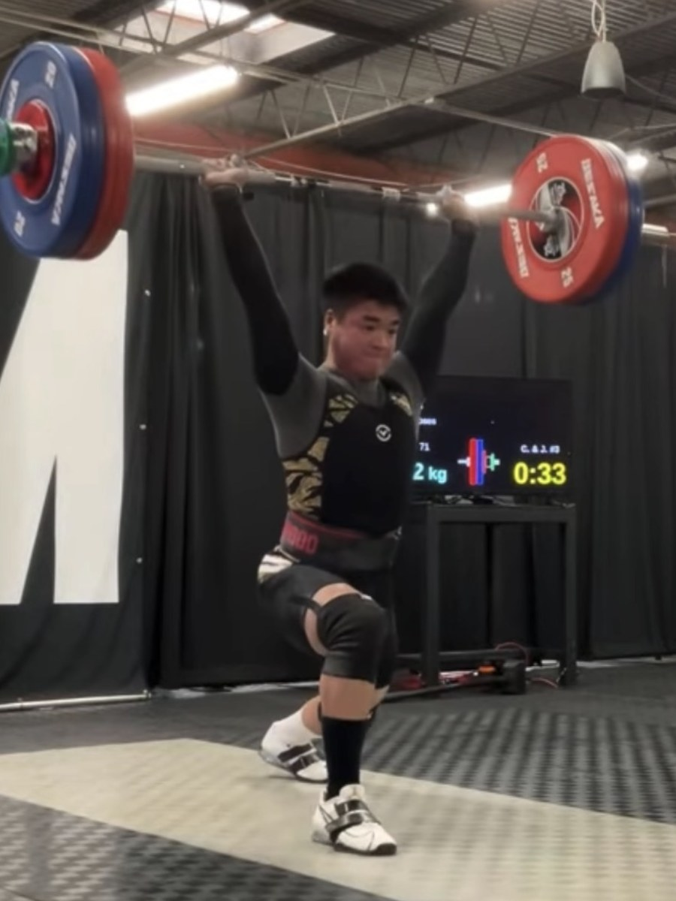
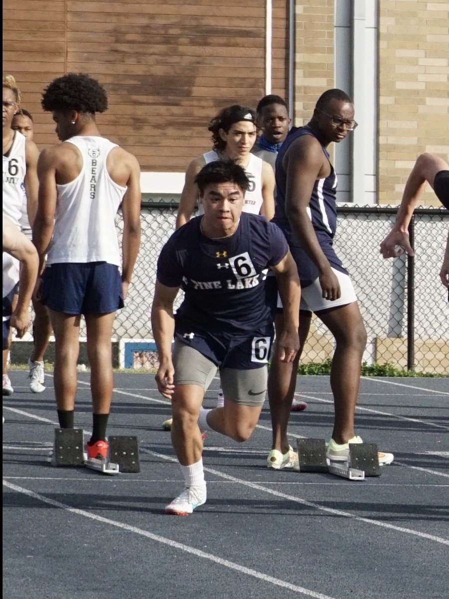
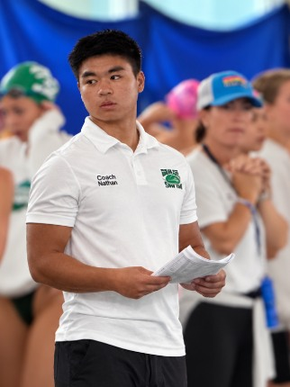
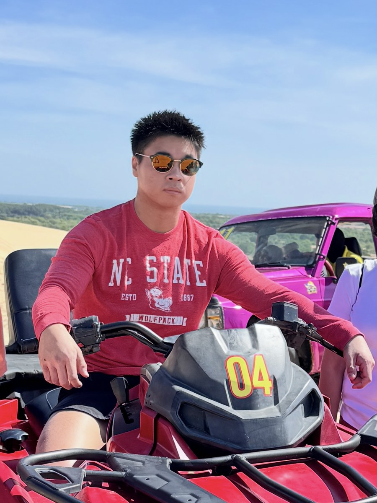
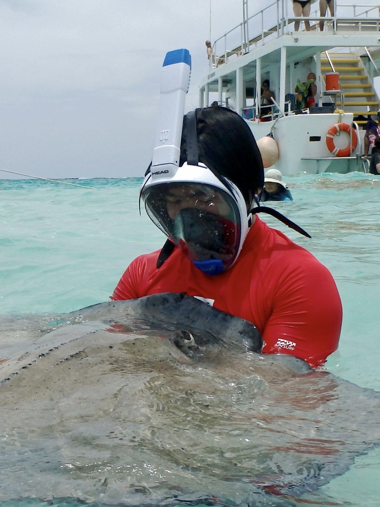
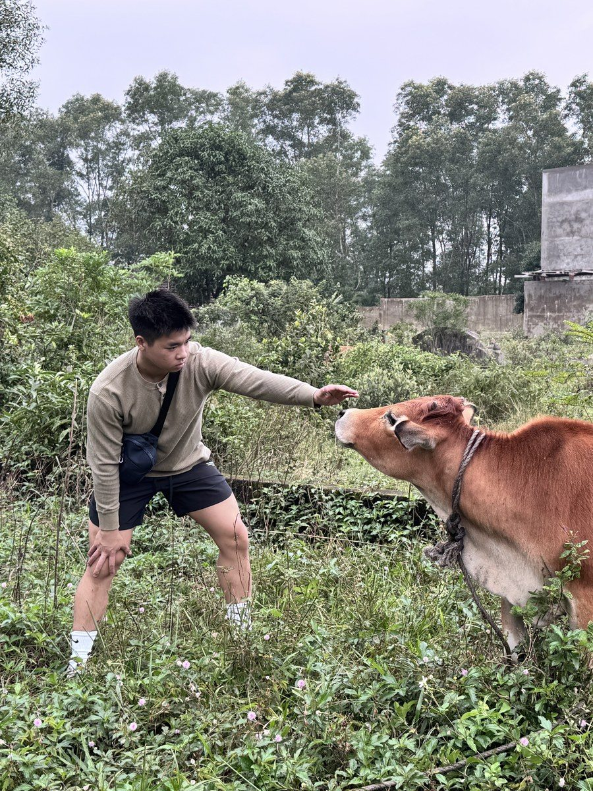

📍Current Status
✨Background
I'm a Computer Science undergraduate at North Carolina State University, specializing in Artificial Intelligence and Machine Learning. What I keep coming back to is systems that notice what a person is doing and respond before being asked — treating gaze and physiological signals as an input channel rather than a measurement recorded after the fact.
That shows up across the work: eye tracking to time an AI museum guide, biosignals to decide when a coaching cue will land, stereo vision to make a projected play space respond to the people in it. Before the lab I interned at Everi Holdings on backend tooling for financial transaction systems, and I spent nearly three years teaching computer science and web development at Pine Lake Preparatory.
I'm certified through the CITI Program for human subjects research, which means I can run studies with participants rather than only build the systems they use.
🎯Skills & Expertise
Programming Languages
Frameworks & Tools
AI & XR
- Computer Vision
- Eye Tracking
- AI Agents
- Multimodal Sensing
Hardware
- Meta Quest 3
- Pupil Labs Neon XR
- ZED 2i Stereo Camera
- EmotiBit
Certification
- CITI Program — Human Subjects Research (2026–2029)
🏋️Athletics
I compete in Olympic weightlifting at the national level, holding state titles and state records, and I serve as president of the NC State Club Olympic Weightlifting team. Before weightlifting I swam competitively at the state level and won a state championship, and I ran track as a conference champion. I also spent two years as a head swim coach.



🌏Places I've Been
Drag to spin and tilt · scroll or pinch to zoom · hover a marker for the name
Vietnam
- Saigon
- Đà Nẵng
- Huế
- Quảng Bình
- Quảng Ngãi
- Phan Thiết
- Mỹ Tho
- Cần Thơ
Japan
- Tokyo
- Kyoto
- Nara
- Hiroshima
Taiwan
- Taipei
- New Taipei City
- Jiufen Old Street
- Shifen Old Street
- Beitou
- Yangmingshan National Park
Elsewhere in Asia
- Icheon, South Korea
- Singapore
Mexico, Caribbean & Central America
- Cancún
- Cozumel
- Nassau, Bahamas
- Cayman Islands
- Jamaica
- Puerto Rico
- Costa Rica
Canada
- Toronto
- Montréal
- Quebec
United States
- California
- Colorado
- Florida
- Georgia
- Kentucky
- Massachusetts
- Minnesota
- Montana
- Nevada
- New Orleans
- New York
- North Carolina
- Ohio
- Oregon
- Pennsylvania
- Rhode Island
- South Carolina
- Tennessee
- Texas
- Virginia
- Washington
- West Virginia
- Yellowstone National Park



🎮Interests
© 2026 Nathan Tran · Raleigh, North Carolina